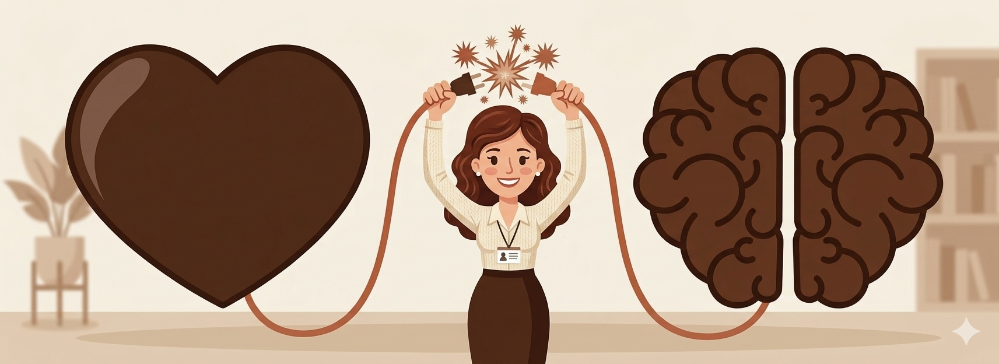
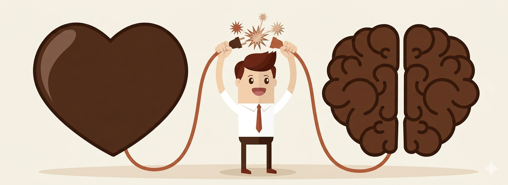

Ansiedade constante
Pensamentos acelerados, dificuldade para desligar e sensação de alerta o tempo todo.
Atendimento psicológico com escuta qualificada, abordagem acolhedora e acompanhamento pensado para ansiedade, estresse e momentos de transição.
Pensamentos acelerados, dificuldade para desligar e sensação de alerta o tempo todo.
Rotina pesada, esgotamento e dificuldade para sustentar foco, energia e presença.
Momentos de transição, insegurança e a sensação de não saber como organizar a própria vida.
Construímos uma jornada mais clara, humana e acolhedora, com atenção tanto ao cuidado clínico quanto à experiência de atendimento.
Profissionais preparados para acolher diferentes fases da vida com seriedade, técnica e sensibilidade.
Sessões online ou presenciais com agenda adaptada à sua rotina e ao seu momento atual.
Objetivos definidos em conjunto, com evolução acompanhada ao longo do processo terapêutico.


Ela carrega um jogo de palavras que soa como um convite ao recomeço. O termo "Nova" traz a ideia de frescor, de uma página em branco e da possibilidade real de mudança. Já a palavra "Mente" não se refere apenas ao intelecto, mas ao nosso mundo interno, às nossas memórias e ao lugar sagrado onde guardamos nossas emoções.
Ao juntar as duas, o nome deixa de ser apenas uma marca e passa a ser uma promessa: a de que é possível olhar para si mesmo novamente, sob uma nova luz, com mais paciência e clareza.
Visualmente, através de tons terrosos, a marca transmite a sensação de algo que está sendo replantado em solo fértil, sugerindo que o cuidado com a mente é um processo natural, orgânico e, acima de tudo, profundamente humano.
"Consegui organizar minha ansiedade e voltar a dormir melhor em poucas semanas."
Marina, 29 anos
"O processo foi leve, profissional e me ajudou a lidar com a pressão no trabalho."
Rafael, 35 anos
"Gostei da praticidade no agendamento e da forma como fui acolhida desde o início."
Camila, 24 anos
Se fizer sentido para você, preencha o formulário e converse com a equipe.